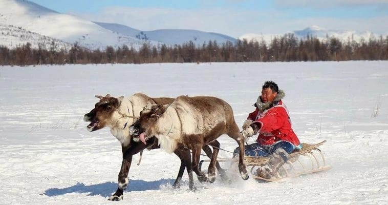
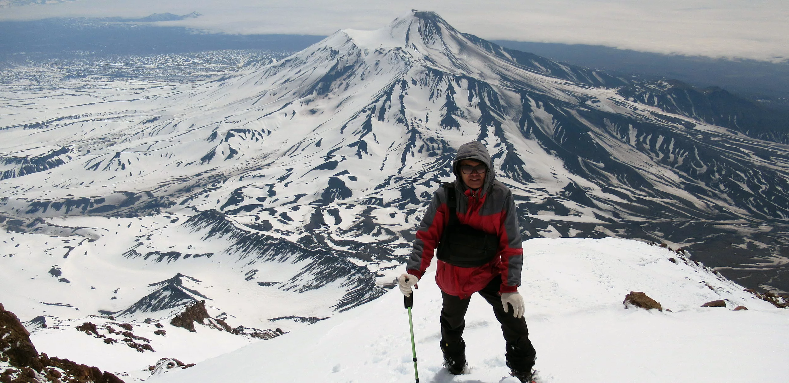

🦌 Чукчи
Коренной народ Чукотки. Делятся на оленных (кочевых) и прибрежных (занимающихся морским зверобойным промыслом).
Регион: Чукотский автономный округ
~16 тыс.
Анимизм, Православие
Подробнее о традициях →

🌋 Коряки
Народ Камчатки, близкий к чукчам по языку и культуре. Традиционно занимаются оленеводством и рыболовством.
Регион: Камчатский край
~8 тыс.
Анимизм, Православие
Подробнее о традициях →

🐟 Ительмены
Малый коренной народ Камчатки. Традиционно занимались рыболовством, охотой и собирательством.
Регион: Камчатский край
~3 тыс.
Анимизм, Православие
Подробнее о традициях →
Общие черты чукотско-камчатских народов
Оленеводство
Кочевой образ жизни с северными оленями
Морской промысел
Охота на китов, тюленей, моржей
Яранга
Переносное жилище из шкур оленей
Собачьи упряжки
Основной вид транспорта зимой
Шаманизм
Традиционные верования и обряды
Арктическая адаптация
Выживание в суровых условиях